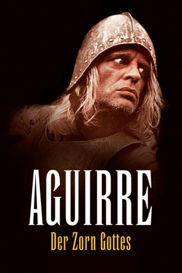
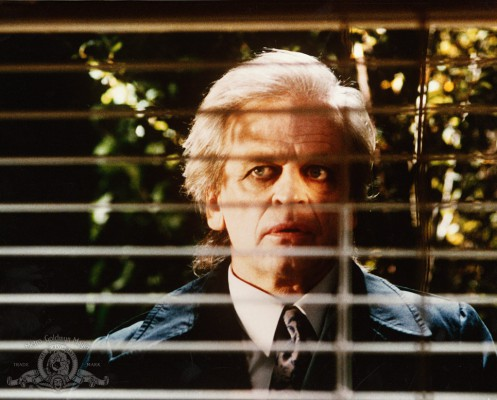
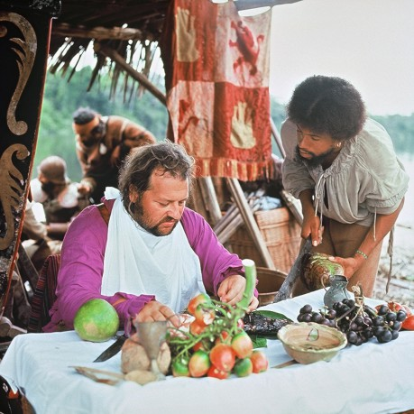

#4613 Aguirre - Der Zorn Gottes
Alternativ: Aguirre, the Wrath of God (Originaltitel)
 
 IMDB-Wertung: 8.0 / 10
IMDB-Wertung: 8.0 / 10  Metascore: 0
Metascore: 0 
Eine Gruppe spanischer Eroberer bricht im Dschungel des Amazonas mit Flößen auf, um die legendäre Goldstadt El Dorado zu finden. Der machtbesessene Aguirre reißt die Kontrolle über die Expedition an sich und führt sie, am Rande des Wahnsinns stehend, flussabwärts in den Untergang.
Jahr: 1972
Dauer: 94 Minuten
FSK: 12
Land: West-Deutschland Studio: Filmverlag der AutorenTonspuren:
Untertitel:
Auflösung: 1080p (1440x1080) Größe: 8734 MB
Genre: Abenteuer, Drama, Geschichte
Regisseur:  Werner Herzog
Werner Herzog
Drehbuch: Jeff Maguire
Soundtrack:
Darsteller:
-  Klaus Kinski als Don Lope de Aguirre
- Helena Rojo als Inez
- Ruy Guerra als Don Pedro de Ursua
- Claus Biederstaedt als Brother Gaspar de Carvajal , uncredited
- Del Negro als Brother Gaspar de Carvajal
-  Peter Berling als Don Fernando de Guzman
- Cecilia Rivera als Flores
- Daniel Ades als Perucho
- Edward Roland als Okello
- Alexandra Cheves als
- Armando Polanah als Armando
- Daniel Farfán als
- Julio E. Martínez als
- Alejandro Repullés als Gonzalo Pizarro
- Indianern der Kooperative Lauramarca als
- Lothar Blumhagen als Don Pedro de Ursua , uncredited
- Heinz Theo Branding als Don Fernando de Guzman , uncredited
- Christian Brückner als Balthasar , uncredited
- Michael Chevalier als Conqueror Being Beheaded , uncredited
- Norbert Gescher als Conqueror , uncredited
- Justo González als González , uncredited
- Uta Hallant als Inez / Flores , uncredited
- Manfred Lehmann als Conqueror , uncredited
- Antonio Marquez als (uncredited
- Gerd Martienzen als Don Lope de Aguirre , uncredited
- Edgar Ott als Gonzalo Pizarro , uncredited
- Uwe Paulsen als Okello , uncredited
- Dieter Ranspach als Perucho , uncredited
Datei: X:\1972\Aguirre - Der Zorn Gottes (1972, FSK12, 1440x1080).mkv seit 24.10.2016
Festplatte: HD 1971-1979
 Es gibt insgesamt 26 Filme in der Gruppe '1972'
Es gibt insgesamt 26 Filme in der Gruppe '1972'